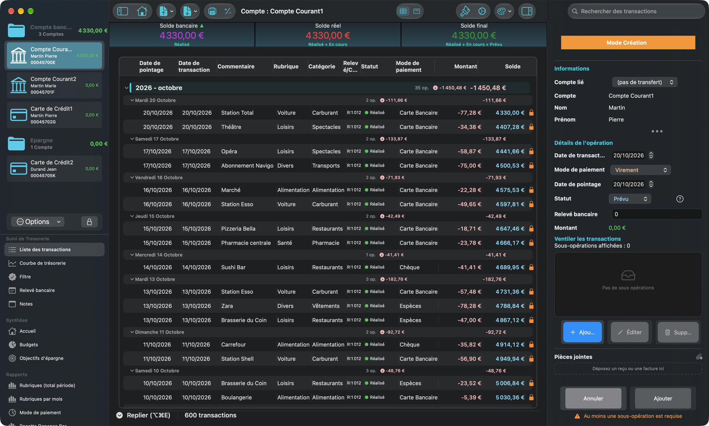
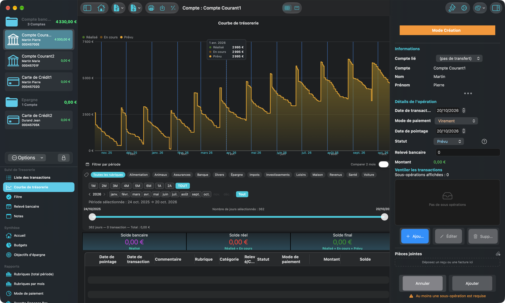
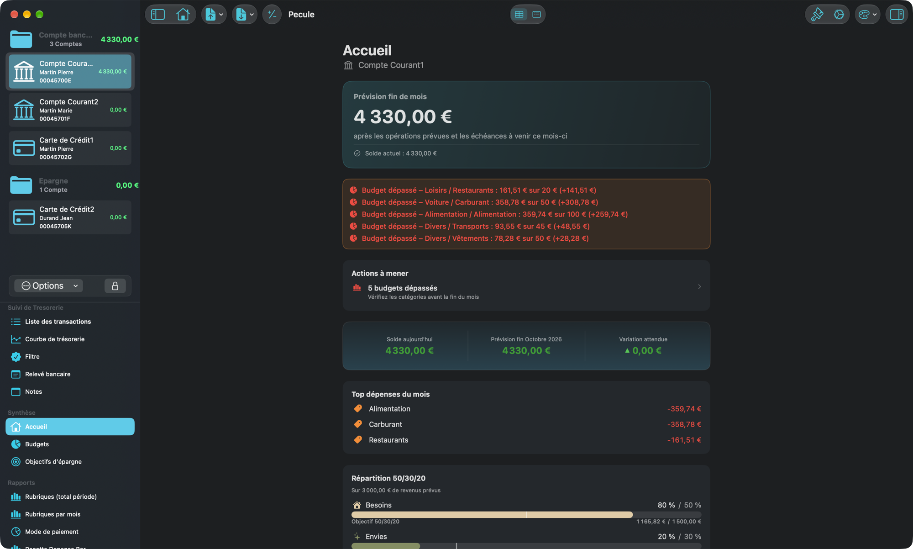
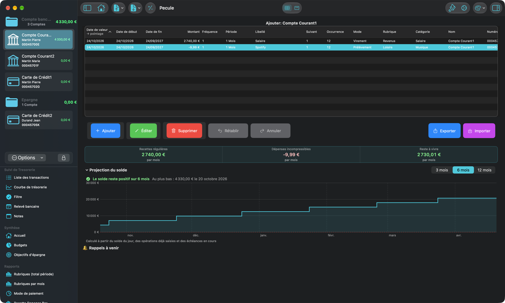
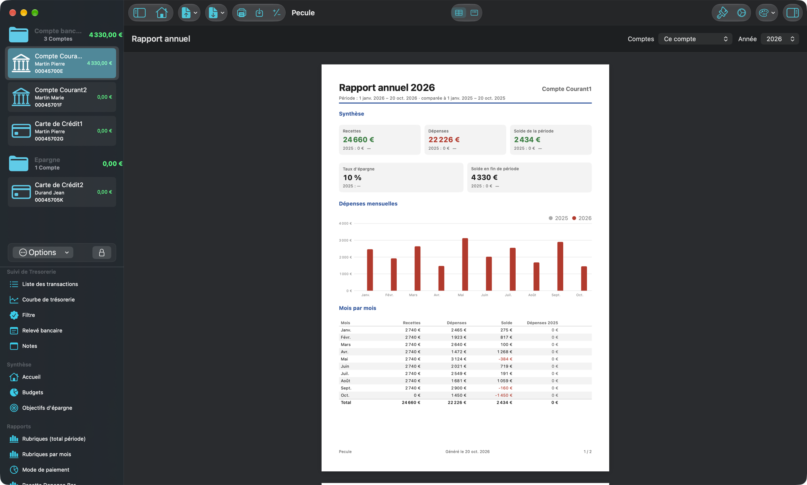
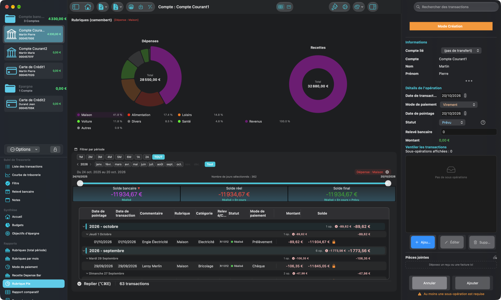

Vos finances personnelles, claires sur votre Mac
Pécule réunit vos comptes, suit votre trésorerie et transforme vos transactions en graphiques lisibles. Simple, rapide, et 100 % local.

Tout pour piloter votre argent
Une application native SwiftUI, pensée pour aller à l'essentiel sans compromis sur la clarté.
Multi-comptes
Gérez autant de comptes que nécessaire — courant, épargne, carte, professionnel — regroupés en dossiers dans une barre latérale nette.
Transactions organisées
Vos opérations classées par année et par mois, avec sous-opérations, statut (réalisé, engagé, prévu), pièces jointes (reçus, factures) et édition en un clic.
Courbe de trésorerie
Visualisez l'évolution de vos soldes dans le temps et anticipez vos fins de mois d'un coup d'œil.
Accueil & budgets
Un tableau de bord du mois : soldes, fin de mois prévue et actions à mener. Budgets par catégorie et répartition besoins / envies / épargne (50/30/20).
Projection & alertes
Le solde projeté jour par jour selon vos échéances, avec une alerte avant un découvert ou un budget dépassé.
Objectifs d'épargne
Fixez un montant et une date : Pécule calcule l'effort mensuel, suit votre progression et programme l'épargne en un clic.
Rapports & graphiques
Camemberts et histogrammes par catégorie, rubrique ou mode de paiement pour comprendre où va votre argent.
Rapport annuel PDF
L'année comparée à la précédente, sur un compte, un dossier ou tous vos comptes, à imprimer ou à exporter en PDF.
Imports bancaires
CSV, OFX, QIF et relevés PDF de plusieurs banques. Les doublons sont détectés et la catégorisation apprend de vos choix.
Échéancier
Opérations récurrentes et virements programmés entre comptes, créés automatiquement à leur date.
Rapprochement guidé
Pointez vos opérations face au relevé de la banque, étape par étape, et joignez-y le PDF du relevé.
Données protégées
Sauvegardes automatiques et outil « Vérifier la base », qui détecte et répare les incohérences.
Un aperçu de l'application
Interface native macOS, en clair comme en sombre, disponible en français, anglais, espagnol, italien et allemand.





Vos données restent chez vous
Pécule n'envoie rien sur Internet. Tout est stocké localement sur votre Mac — aucun compte à créer, aucun serveur, aucune publicité.
Foire aux questions
Mes données sont-elles stockées en ligne ?
Non. Toutes les données sont enregistrées localement sur votre Mac. Aucune information n'est envoyée sur un serveur distant.
Puis-je importer mes données bancaires ?
Oui : fichiers CSV (vous associez les colonnes lors de l'import), OFX/QFX, QIF et relevés PDF de plusieurs banques. Les transactions déjà présentes sont détectées pour éviter les doublons.
Peut-on gérer plusieurs comptes ?
Oui. Créez et suivez autant de comptes que vous le souhaitez : courant, épargne, professionnel…
Les opérations sont-elles catégorisées automatiquement ?
Une catégorisation semi-automatique est proposée : l'application reconnaît les intitulés fréquents pour suggérer des catégories, que vous pouvez ajuster manuellement.
Existe-t-il une version Windows ou Linux ?
Non. Pécule est développé en SwiftUI pour macOS uniquement. Une version multiplateforme n'est pas prévue à court terme.
Comment signaler un bug ou proposer une traduction ?
Écrivez-nous à thierry.hentic@gmail.com en précisant votre version de macOS, les étapes pour reproduire le problème et, si possible, une capture d'écran. Toute aide pour les traductions est la bienvenue !
Prêt à reprendre le contrôle ?
Téléchargez Pécule et gérez vos finances en quelques minutes. Compatible macOS 14 (Sonoma) et versions ultérieures.
Manuel d'utilisation (PDF)